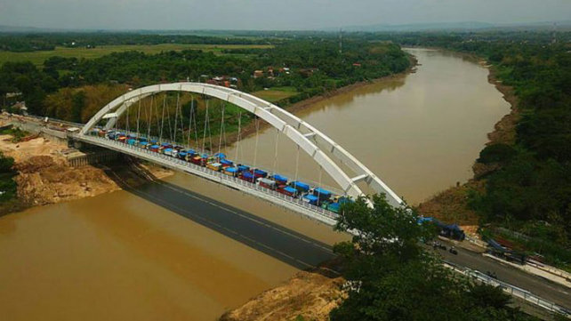
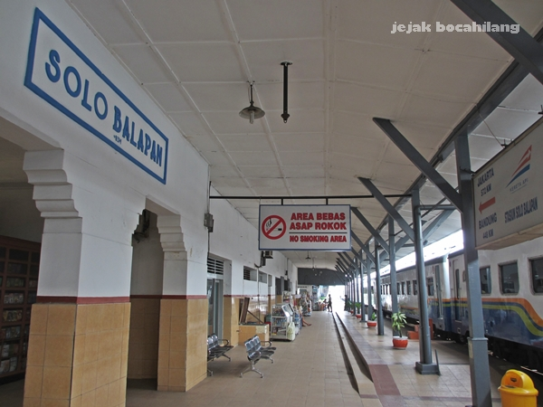

SURAKARTA
This is my hometown introduction page
You can find brief introduction in this page
Below you can navigate to other section of this website:
Surakarta (Javanese: ꦯꦸꦫꦏꦂꦠ), known colloquially as Solo, is a city in Central Java, Indonesia.
The 44 km2 (16.2 sq mi) city[4] adjoins Karanganyar Regency and Boyolali Regency to the north,
Karanganyar Regency and Sukoharjo Regency to the east and west, and Sukoharjo Regency to the south.
On the eastern side of Solo lies Solo River (Bengawan Solo).
Its built-up area, consisting of Surakarta Municipality and 59 districts spread over seven regencies,
was home to 3,649,254 inhabitants as of 2010 census
Fun Fact:
Surakarta is the birthplace of the current President of Indonesia, Joko Widodo.
He served as Mayor of Surakarta from 2005 to 2012.
Below is a song about Bengawan Solo, one of most known Indonesian Song about the greatest river in Java:
Bengawan Solo
Riwayatmu ini
Sedari dulu jadi...
Perhatian insani
Musim kemarau
Tak seberapa airmu
Dimusim hujan air..
Meluap sampai jauh
Mata airmu dari Solo
Terkurung gunung seribu
Air meluap sampai jauh
Dan akhirnya ke laut
Itu perahu
Riwayatnya dulu
Kaum pedagang selalu...
Naik itu perahu

After Surakarta became a city, it was divided into five districts (kecamatan) and subdivided into 51 kelurahan.
Surakarta, Karanganyar, Sragen, Wonogiri, Sukoharjo, Klaten, and Boyolali, are collectively called Surakarta
The water sources for Surakarta are in the valley of Merapi, with a capacity of 3,404 L/second.
The city has a lengthy wet season spanning from October through May, and a relatively short dry season.
According to the 2009 estimate, there were 245,043 males and 283,159 females in Surakarta.
The per capita GDP of Surakarta in 2009 was 16,813,058.62 IDR, the fourth highest in Central Java.
Surakarta is the first to host National Paralympic Week in 1957 and hosted several of the subsequent games.
Adisumarmo Airport had 2,060 outbound domestic flights and 616 outbound international flights.
Tirtonadi Terminal is the largest bus terminal in Surakarta.
Surakarta has four train stations: Solo Balapan, Purwosari, Solo Jebres, and Solo Kota (Sangkrah).
Below is a song about Statiun Balapan, one of the largest station in Java:
Ning stasiun balapan
Kuto solo sing dadi kenangan
Kowe karo aku
Naliko ngeterke lungamu
Ning stasiun balapan
Rasane koyo wong kelangan
Kowe ninggal aku
Ra kroso netes eluh ning pipiku
Da a... Dada sayang
Da... Slamat jalan
Reff:
Janji lungo mung sedelo
Jare sewulan ra ono
Pamitmu naliko semono
Ning stasiun balapan solo
Jare lungo mung sedelo
Malah tanpo kirim warto
Lali opo pancen nglali
Yen eling mbok enggal bali
